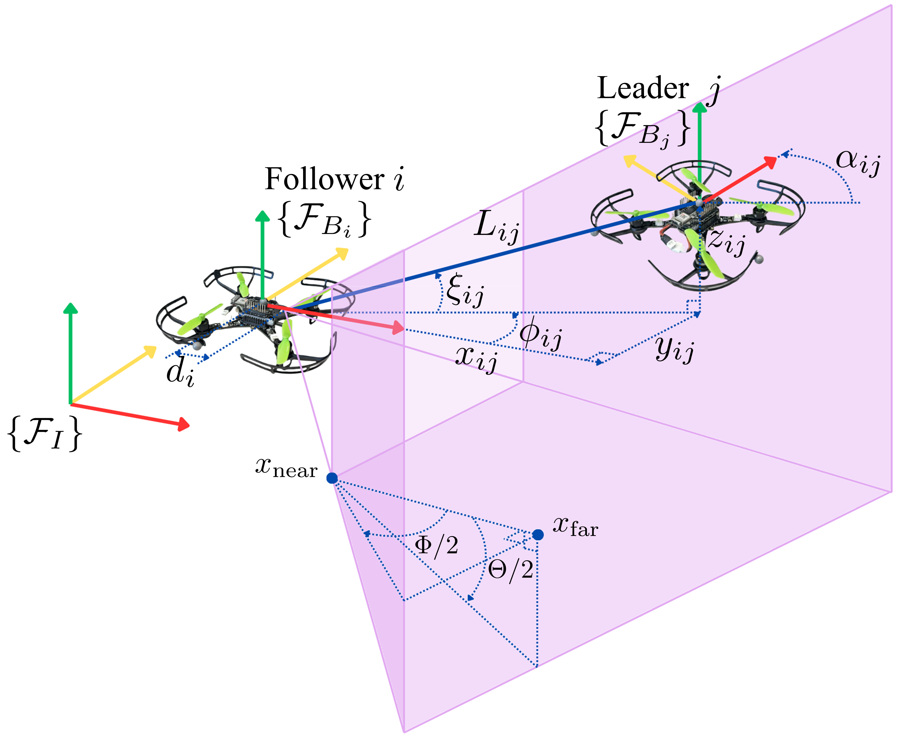
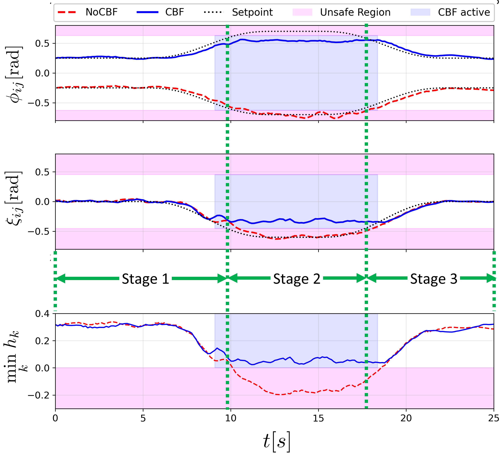
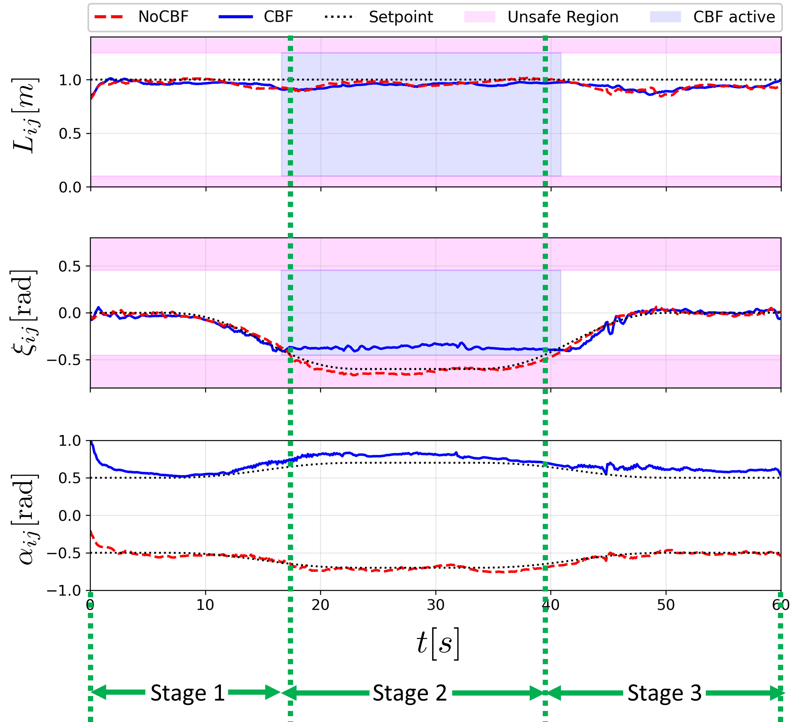

Gazebo Simulation
Confined cave scenario with conflicting formation objectives.
[Insert Gazebo Simulation Video Here]
This paper proposes a novel perception-aware safe distributed leader–follower formation control for a multi-UAV system in which each follower relies on a body-fixed camera with a limited field-of-view (FOV). A fundamental challenge is that visual estimation fails when the leader is outside the visible region, which can destabilize formation behaviors.
To address this, we derive a leader–follower formation kinematic abstraction in spherical coordinates and design a nominal formation controller via state-feedback linearization. To guarantee continuous visibility, we incorporate a Control Barrier Function (CBF)–based quadratic program as a real-time safety filter that computes minimally modified safe velocity commands. The proposed method is validated through Gazebo simulations and hardware experiments, demonstrating accurate formation tracking while maintaining perception safety.
We define the 3D leader-follower formation (3D-LFF) state in an augmented spherical coordinate representation: \( \mathbf{x}_{ij} = [L_{ij}, \phi_{ij}, \xi_{ij}, \alpha_{ij}]^\top \).

The perception safe set \( \mathcal{S}^q \) is defined by the camera frustum inequalities, ensuring the leader remains within horizontal (\( \Phi \)) and vertical (\( \Theta \)) FOV angles, as well as depth limits (\( x_{near}, x_{far} \)).
Confined cave scenario with conflicting formation objectives.
[Insert Gazebo Simulation Video Here]
Real-world flight validation using Crazyflie 2.1 brushless UAVs.
[Insert Hardware Experiment Video Here]

Comparison of 3D-LFF states: The CBF-equipped follower (blue) maintains states within safe bounds compared to the unconstrained (NoCBF) baseline.

Hardware validation: The CBF-QP safety filter modifies velocity commands only when visibility is at risk, ensuring forward invariance of the safe set.